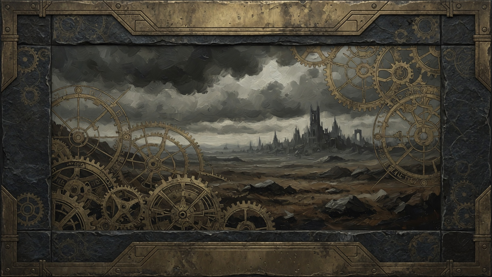
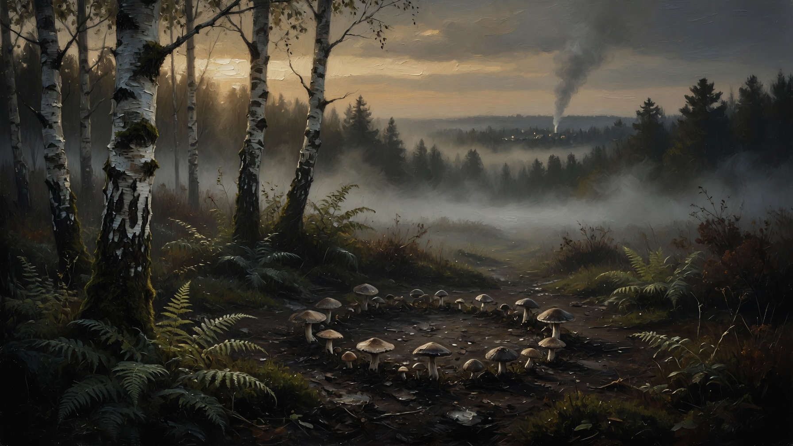
The player wakes in a forest clearing at the margin of Edgewood — a poor-but-proud frontier village — while an ambiguous Assistant watches. It is never a tutorial fairy. It begins as a barn cat and grows into something robed and certain.
The world narrates; it never instructs. Dread arrives in small concrete images, not adjectives: stillborn lambs with brass teeth, bread that rings when it cracks, clocks that tick hours that never were.
Timber frames lean together around a communal stone oven. Traders pass twice a season; a shrine to unnamed saints never lacks a candle. Beyond the birch, the roads begin to change when no one is watching.
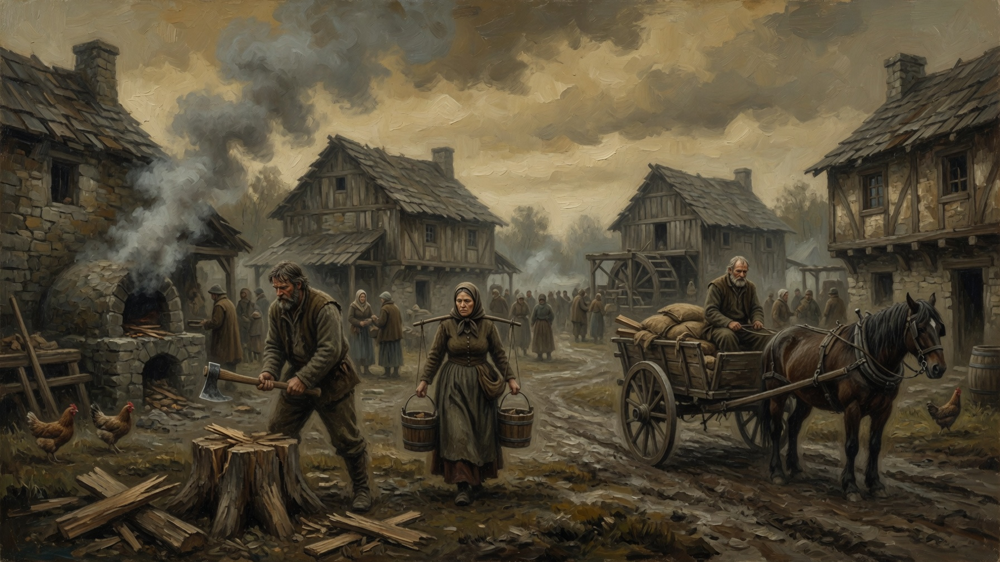
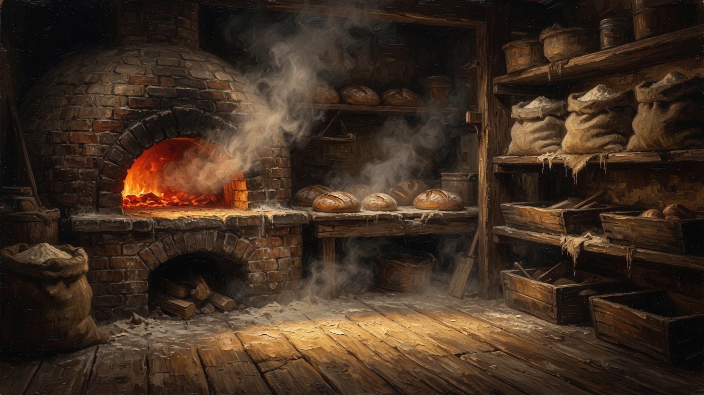
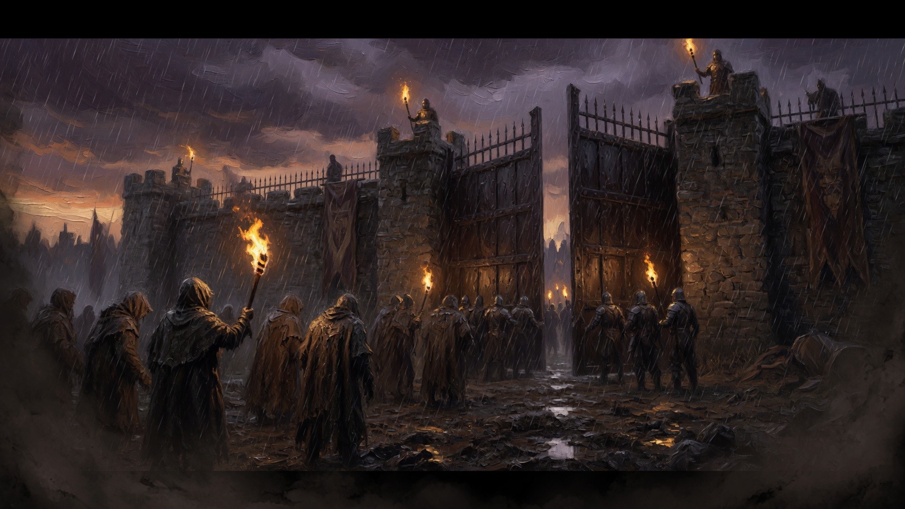
The Clockwork Dark is not a demon you can banish — it is a metastasizing logic. The whole interface re-tints from one hidden phase, cozy to clockwork.
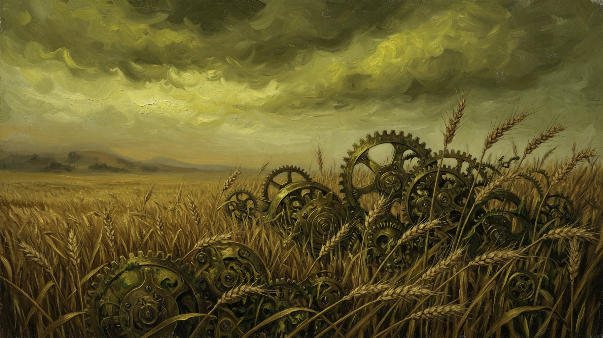
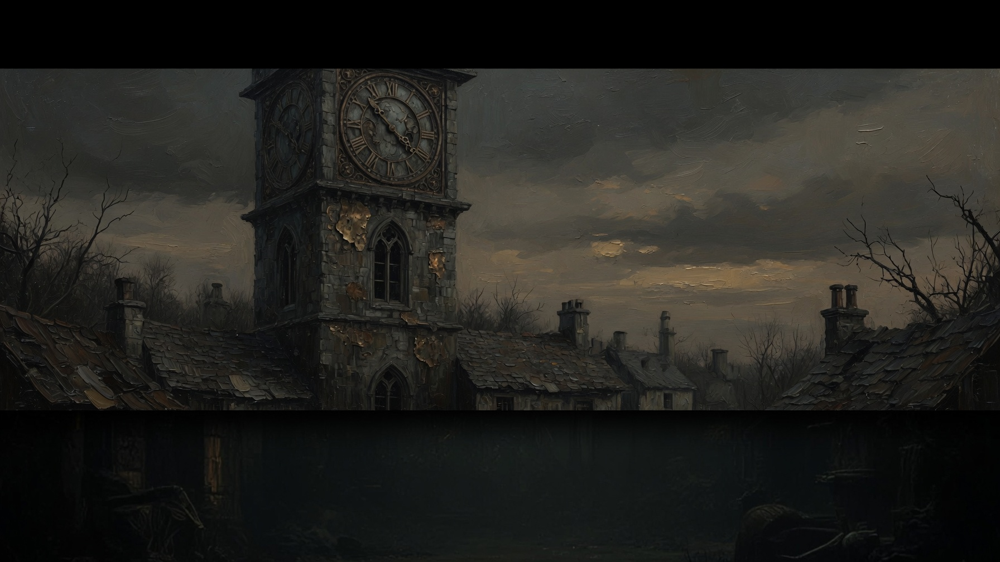
It begins as a cat and grows into a hooded figure whose robe reads its intent — white mercy, grey watching, red appetite, black the Clockwork Dark itself.
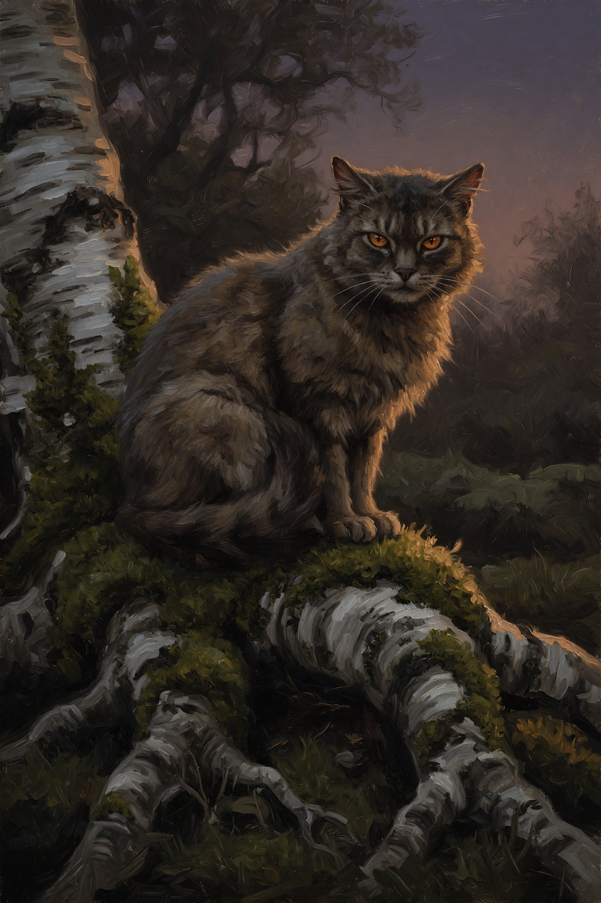
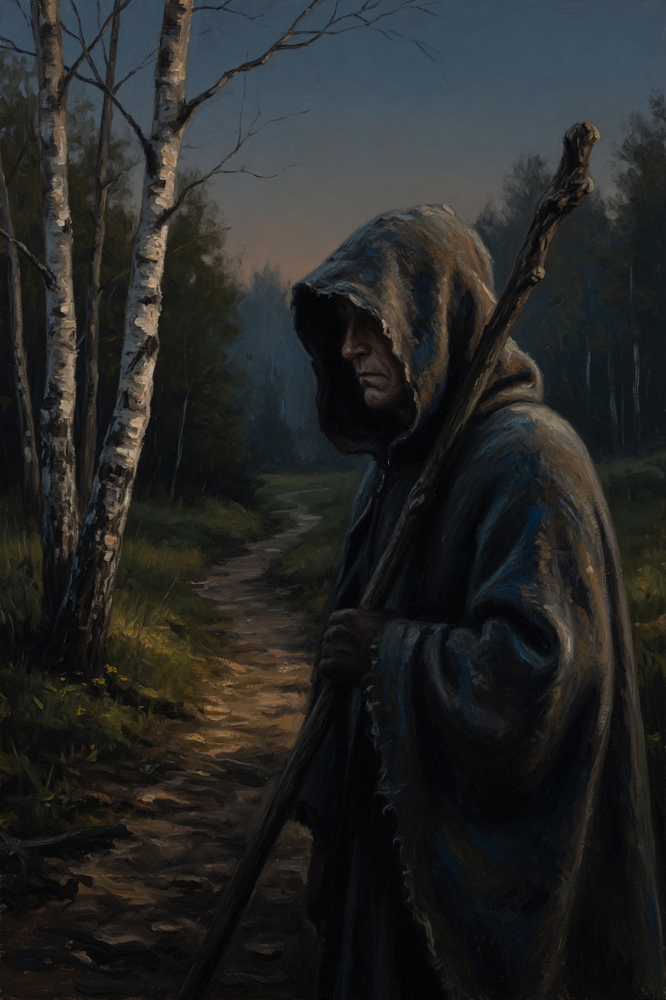
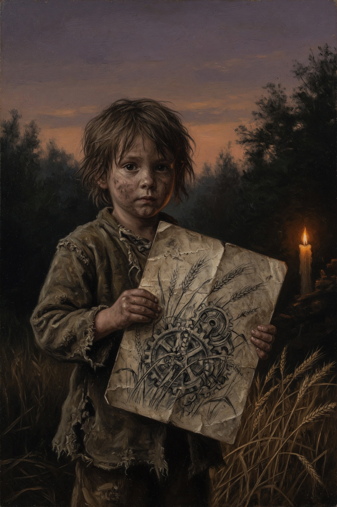
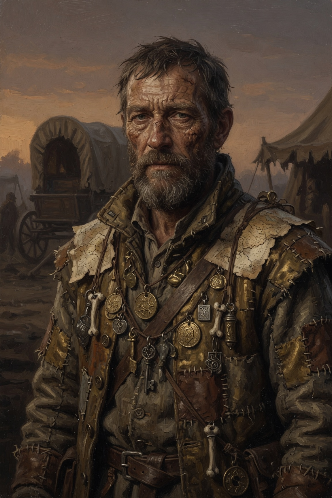
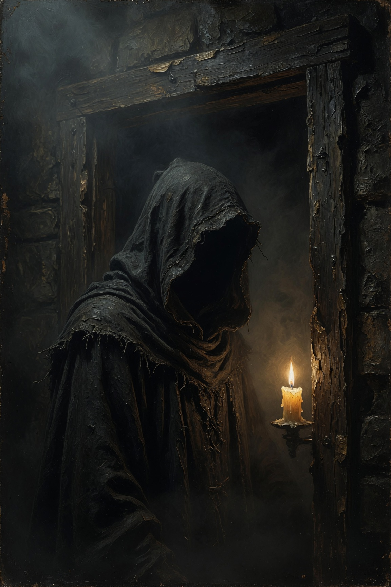
Too-knowing eyes, a curled tail, cute but uncanny. Sits at the square's edge and counts you.
Nine brass pins in the scarf. Sells sympathy charms and maps of roads that shift when the wheat turns wrong.
Charcoal on the fingers. Draws gears in the dirt; by morning they are gone. A quiet friend showed her how.
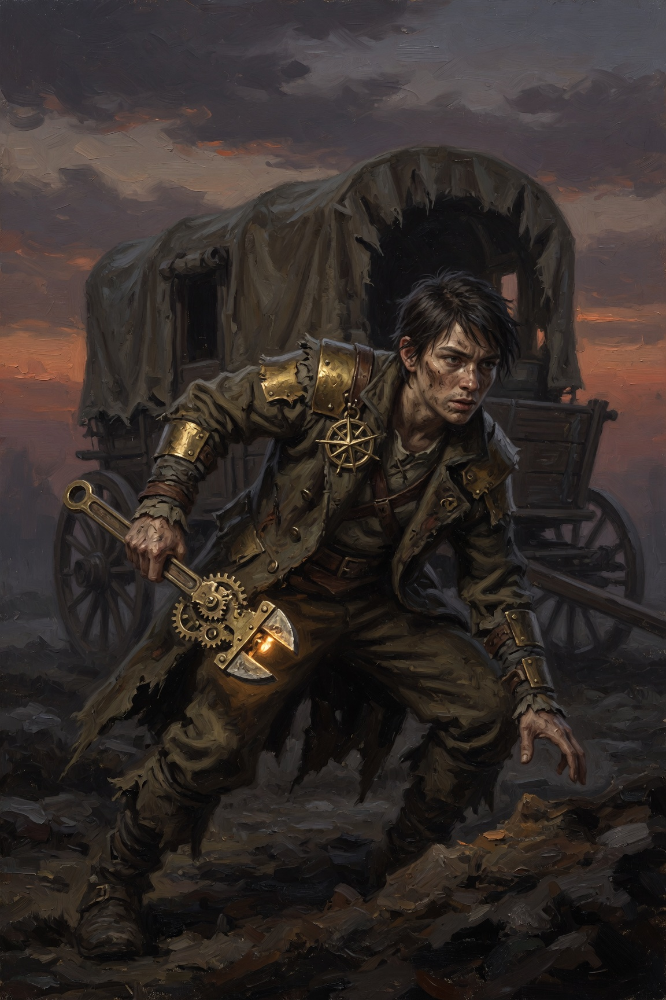
Trade is a list of honest goods in copper. The shrine mural paints the corruption one fragment per phase. The notice board carries rumors that arrive small and concrete — the dread is in the objects.
Beauty in bread steam and moss. Dread in a child's drawing of gears. The road has been counting toward something — and this is where the logic keeps its time.